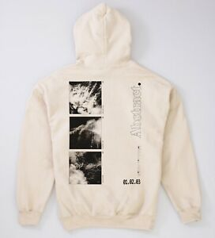

You can easily personalize your T-shirts and hoodies online to jazz up your image.
No matter your age, there is no better way to get the attention you deserve than by purchasing personalised T-shirts and hoodies. You can change your appearance to attract lots of attention. You don't have to do this! You can wear T-shirts and hoodies that you have designed, or you can use a simpler approach.
Your shirt or hoodie's message and design will tell the world about who you are and what you stand for. It can also open up opportunities to have a conversation and start a conversation with people you may not know. It doesn't matter if you only design hoodies or T-shirts. Vestit Planet Personalizing caps, hats and polo shirts can also be done. You can also create unique gifts by personalizing hoodies, Tshirts, and other customized articles. You might consider creating a personalized gift for your friends and family next time you are looking for new ideas for gifts.
How do you start designing custom clothing online? You might think that only graphic designers are qualified to create unique clothing or gifts. You should reconsider your belief. This method is very simple. You only need to be able to use a keyboard. You can create your own personalised T-shirts, hoodies or other gear in a matter of minutes. It's also very easy.
This is how to make unique personalised T-shirts and hoodies online in a matter of minutes
You should first decide what slogan you want to use. You should choose something that grabs your attention, makes you laugh, and something that makes you think. It should at the very minimum raise a smile, or perhaps an eyebrow.
Connect to the Internet and load our online T-shirt design tool directly into your browser.

Select the product that interests you from the drop-down menu. (T-shirt or hoodie), then choose the size and colour. (Note: You can change these during the design process.
Simply overwrite the text sample in the T-shirt designer tool. You can have fun playing with different fonts, font sizes, and colours until the result you like.
You're sure to have a lot of fun if you add a design to your creation. To see the different types of images available, select a category or type a few words into the search box. You will be presented with a variety of images that you can choose from. Hoodie Click on any image to instantly see it on your shirt or hoodie.
You have the chance to try out different designs until you find one that you love. Take as much time as possible before you settle on your final design. You can try as many designs as you want before you make your final decision and add it to your shopping cart.
This is how easy it is to create your custom hoodies or slogan T-shirts online.